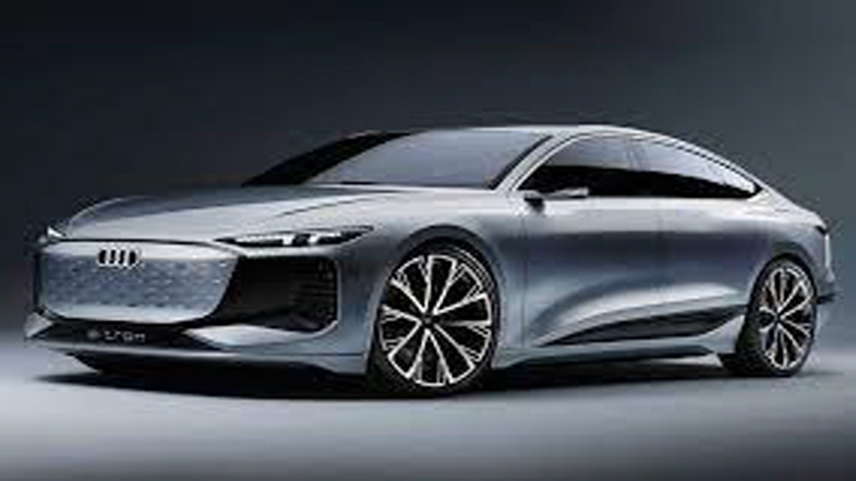
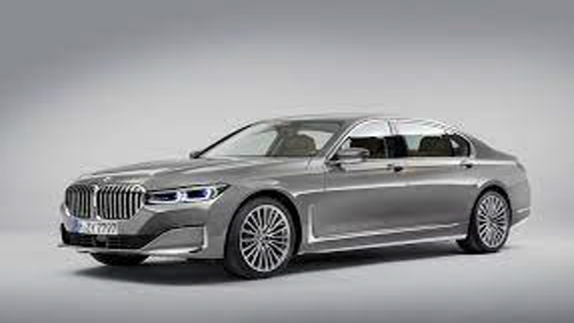
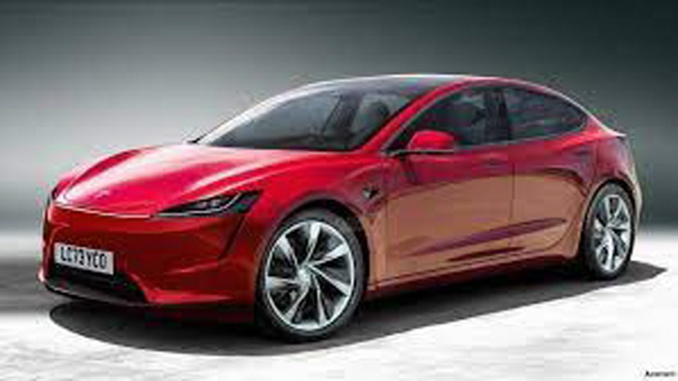

BMW
BMWAUDI
The Audi e-tron GT quattro offers sporty, luxurious and comfortable experience. The sports seat plus in the front seat incorporates a head restraint, which provides strong support for cornering and sporty driving.
BENZ
The all-electric EQE, a new symbol of the era of electric mobilityThe one-bow design of the coupe shoulder line, which extends seamlessly from the front to the rear of the vehicle, further highlights the characteristics of the EQ line, such as the Mercedes-Benz front stereoscopic pattern.
BMW
Fifty-one years ago, BMW's race to the joy of unlimited driving began with the introduction of the BMW 1602e. BMW's passion for sustainable mobility continues from BMW's first electric vehicle E1 to Korea's first imported pure electric vehicle mass-production model i3. BMW has completed its know-how in e-mobility as well as driving capabilities through the continuous development of BMW eDrive technology and sub-brand BMW i.
Tesla
The functions currently available require the driver's active attention and are held accountable to the driver. The vehicle is not currently driving autonomously. In order for these features to be commercialized, billions of miles of driving tests must be used to demonstrate that the vehicle's autonomous driving ability is significantly ahead of the driver's driving ability, and regulatory approval may take longer in some jurisdictions.
